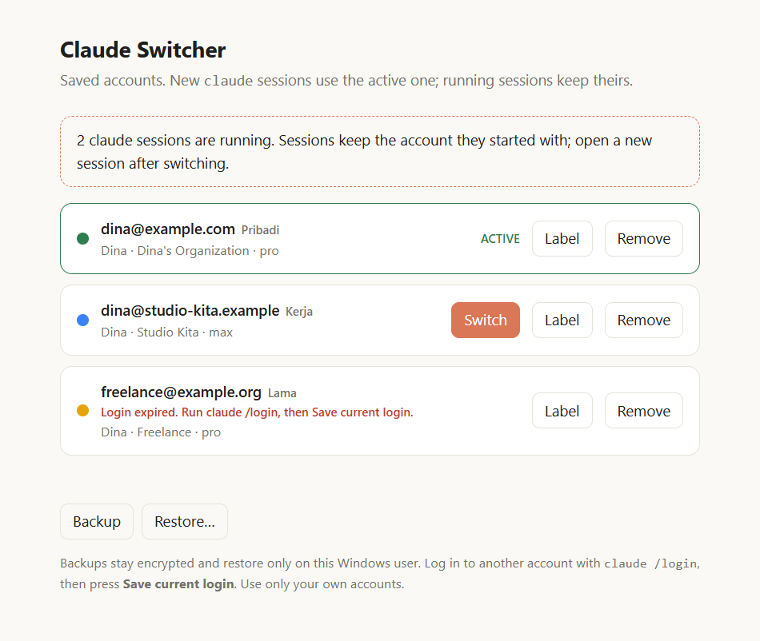

Ganti akun Claude Code tanpa login ulang
Simpan beberapa akun Claude Code di system tray Windows dan pindah dengan satu klik. Gratis, open source, dan semua data tetap di PC kamu.
Windows 10/11 · tanpa hak admin

Simpan beberapa akun Claude Code di system tray Windows dan pindah dengan satu klik. Gratis, open source, dan semua data tetap di PC kamu.
Windows 10/11 · tanpa hak admin

Dibuat untuk yang punya akun pribadi dan akun kerja, atau lebih dari satu workspace.
Pilih akun di tray atau dashboard, atau tekan Ctrl+Alt+Shift+S untuk lompat ke akun berikutnya.
Login tersimpan dienkripsi dengan Windows DPAPI. Hanya user Windows-mu yang bisa membukanya.
Claude Code memutar token saat berjalan. Salinan tersimpan diperbarui tiap 30 detik, jadi ganti akun tidak pernah memulihkan login yang basi.
Dashboard menghitung sesi claude yang masih terbuka dan bertanya dulu sebelum kamu ganti.
Beri nama seperti “Kerja” atau “Pribadi”. Akun yang loginnya sudah kedaluwarsa ditandai dan dilewati.
Unduh akun tersimpan, tetap terenkripsi, lalu pulihkan nanti untuk user Windows yang sama.
Kamu tetap login dengan cara biasa; Claude Switcher hanya mengingat setiap login.
claude /login, lalu klik ikon tray dan tekan Save current login.claude /login dengan akun lainmu dan simpan juga.claude baru memakainya; sesi yang sudah berjalan tetap di akun lamanya.Claude Switcher menukar dua entri di file yang sudah dipakai Claude Code. Tidak ada yang diunggah.
%APPDATA%\ClaudeSwitcher.127.0.0.1, tidak pernah mengirim token ke halaman, dan menolak permintaan dari situs lain..bak dari file sebelumnya.Hanya untuk akun milikmu sendiri. Memutar banyak akun untuk menghindari batas pemakaian, atau berbagi satu login dengan orang lain, melanggar ketentuan Anthropic dan bisa membuat akun diblokir. Ini alat tidak resmi dan tidak berafiliasi dengan Anthropic.
Sesi yang berjalan menyimpan loginnya di memori. Buka sesi baru setelah ganti akun; dashboard memberi tahu berapa sesi yang masih berjalan.
Claude Switcher bergantung pada tempat Claude Code menyimpan login saat ini (~/.claude/.credentials.json dan ~/.claude.json). Update bisa mengubahnya. File aslimu dicadangkan sebagai .bak setiap kali ditulis.
Belum, saat ini hanya Windows.